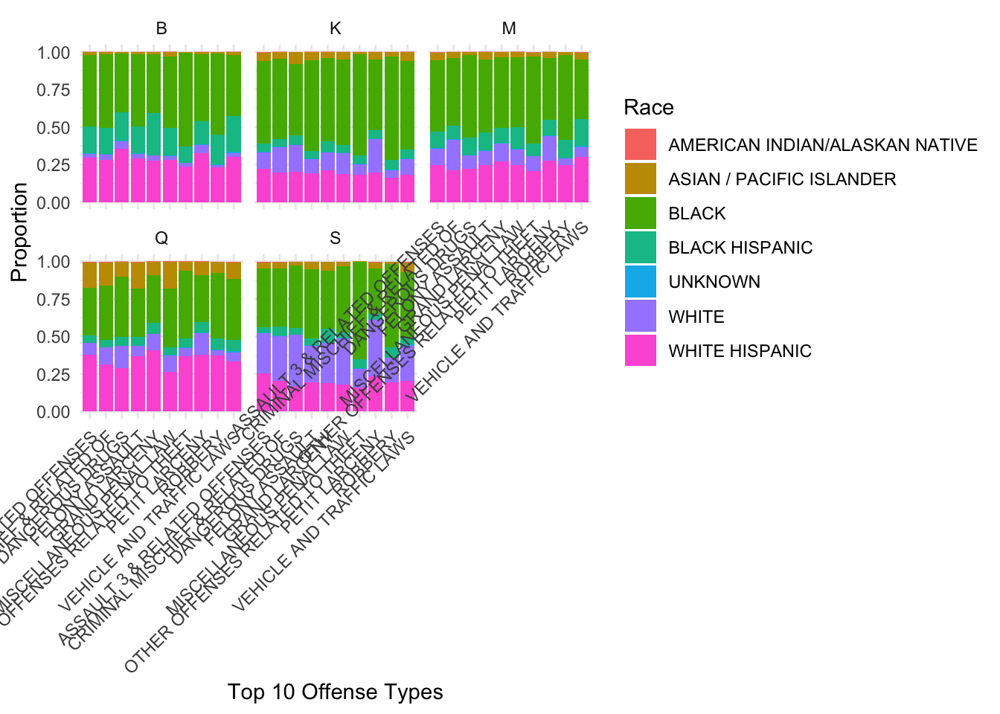

As our project concludes, we aim to present a clear thesis supported by a focused analysis of NYPD arrest data and ACS unemployment data. Throughout the project, we’ve cleaned and joined multiple datasets, explored key demographic and geographic variables, and iteratively refined our visualizations and statistical summaries.
Thesis Statement
Non-violent arrests in NYC disproportionately affect Black and Hispanic individuals in boroughs with higher unemployment rates, particularly the Bronx and Brooklyn. This pattern highlights the structural intersection between policing and economic inequality.
Continued Exploratory Data Analysis
Our analysis focused on three areas: demographic disparities in offense types, age patterns, and the relationship between unemployment and non-violent arrests.
1. Race and Offense Type by Borough (Top 10 Only)
top_offenses <- arrest_data %>%count(Offense_Description) %>%top_n(10, n) %>%pull(Offense_Description)arrest_data %>%filter(Offense_Description %in% top_offenses) %>%count(Race, Borough, Offense_Description) %>%group_by(Borough, Offense_Description) %>%mutate(percentage = n /sum(n)) %>%ggplot(aes(x = Offense_Description, y = percentage, fill = Race)) +geom_bar(stat ="identity", position ="stack") +facet_wrap(~ Borough) +theme_minimal() +theme(axis.text.x =element_text(angle =45, hjust =1)) +labs(x ="Top 10 Offense Types", y ="Proportion", fill ="Race")

Figure 1: Top Offense Categories by Race and Borough
2. Age Group Distribution Across Offense Types (Top 10 Only)
arrest_data %>%filter(Offense_Description %in% top_offenses) %>%count(Age_Group, Offense_Description) %>%group_by(Offense_Description) %>%mutate(prop = n /sum(n)) %>%ggplot(aes(x = Offense_Description, y = prop, fill = Age_Group)) +geom_bar(stat ="identity") +theme_minimal() +theme(axis.text.x =element_text(angle =45, hjust =1)) +labs(x ="Top 10 Offense Types", y ="Proportion", fill ="Age Group")
Figure 3: Non-Violent Arrest Proportions vs. Borough Unemployment Rates
Summary Table
arrest_data %>%filter(Offense_Description %in% top_offenses) %>%count(Race, Offense_Description) %>%group_by(Race) %>%mutate(Percent = n /sum(n)) %>%filter(n >100) %>%gt() %>%tab_header(title ="Top Offense Distribution by Race")
Top Offense Distribution by Race
Offense_Description
n
Percent
AMERICAN INDIAN/ALASKAN NATIVE
ASSAULT 3 & RELATED OFFENSES
199
0.33445378
ASIAN / PACIFIC ISLANDER
ASSAULT 3 & RELATED OFFENSES
2722
0.26324952
CRIMINAL MISCHIEF & RELATED OF
675
0.06528046
DANGEROUS DRUGS
902
0.08723404
FELONY ASSAULT
1617
0.15638298
GRAND LARCENY
503
0.04864603
MISCELLANEOUS PENAL LAW
1239
0.11982592
OTHER OFFENSES RELATED TO THEFT
251
0.02427466
PETIT LARCENY
1258
0.12166344
ROBBERY
385
0.03723404
VEHICLE AND TRAFFIC LAWS
788
0.07620890
BLACK
ASSAULT 3 & RELATED OFFENSES
17360
0.19900041
CRIMINAL MISCHIEF & RELATED OF
5515
0.06321931
DANGEROUS DRUGS
8566
0.09819341
FELONY ASSAULT
10747
0.12319455
GRAND LARCENY
5218
0.05981476
MISCELLANEOUS PENAL LAW
7981
0.09148746
OTHER OFFENSES RELATED TO THEFT
7658
0.08778486
PETIT LARCENY
11001
0.12610619
ROBBERY
6764
0.07753680
VEHICLE AND TRAFFIC LAWS
6426
0.07366225
BLACK HISPANIC
ASSAULT 3 & RELATED OFFENSES
3604
0.19879751
CRIMINAL MISCHIEF & RELATED OF
1028
0.05670473
DANGEROUS DRUGS
1885
0.10397705
FELONY ASSAULT
2249
0.12405538
GRAND LARCENY
1419
0.07827238
MISCELLANEOUS PENAL LAW
1433
0.07904462
OTHER OFFENSES RELATED TO THEFT
982
0.05416736
PETIT LARCENY
2450
0.13514259
ROBBERY
1382
0.07623145
VEHICLE AND TRAFFIC LAWS
1697
0.09360693
UNKNOWN
ASSAULT 3 & RELATED OFFENSES
123
0.19806763
PETIT LARCENY
102
0.16425121
VEHICLE AND TRAFFIC LAWS
113
0.18196457
WHITE
ASSAULT 3 & RELATED OFFENSES
3317
0.17165183
CRIMINAL MISCHIEF & RELATED OF
1698
0.08787001
DANGEROUS DRUGS
2420
0.12523287
FELONY ASSAULT
1732
0.08962948
GRAND LARCENY
1275
0.06598013
MISCELLANEOUS PENAL LAW
1951
0.10096253
OTHER OFFENSES RELATED TO THEFT
816
0.04222728
PETIT LARCENY
4528
0.23432002
ROBBERY
482
0.02494308
VEHICLE AND TRAFFIC LAWS
1105
0.05718278
WHITE HISPANIC
ASSAULT 3 & RELATED OFFENSES
10912
0.22340513
CRIMINAL MISCHIEF & RELATED OF
2868
0.05871755
DANGEROUS DRUGS
4678
0.09577430
FELONY ASSAULT
6107
0.12503071
GRAND LARCENY
3334
0.06825813
MISCELLANEOUS PENAL LAW
3843
0.07867906
OTHER OFFENSES RELATED TO THEFT
2864
0.05863566
PETIT LARCENY
7690
0.15744001
ROBBERY
2955
0.06049873
VEHICLE AND TRAFFIC LAWS
3593
0.07356072
Conclusion
By limiting offense types to the most frequent, clarifying groupings, and connecting arrest trends to borough-level unemployment, our visualizations reveal a consistent pattern: economic stress and structural inequality are closely tied to arrest patterns in NYC. While more work could be done with time-series or spatial mapping, our analysis demonstrates that non-violent arrests are not evenly distributed—and that socioeconomic context matters.